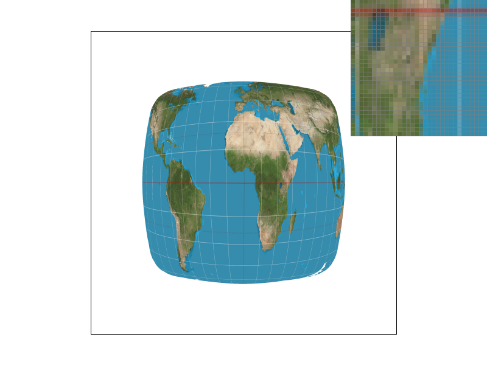
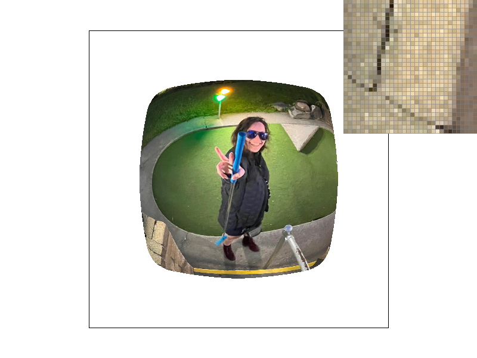

CS184 Spring 2025 Homework 1 Write-Up
Link to webpage: cal-cs184-student.github.io/hw-webpages-sdrobinson-rgb
Link to GitHub repository: github.com/cal-cs184-student/hw1-rasterizer-skythelar

Overview
Homework 1 was to build a C++ image rasterizer capable of displaying SVG files. Throughout the homework I implemented a multitude of functions to rasterize triangles; by completing all the tasks I gave my rasterizer the ability to display solid color triangles, gradients, and texture mapped triangles with a variety of antialiasing techniques at all levels. This homework made me think a lot about the importance of sampling and understanding different sampling techniques when rasterizing triangles.
Task 1: Drawing Single-Color Triangles
In Task 1, I implemented a simplified tringle rasterization algorithm which took a single sample from the middle of each point in the bounding box of the triangle. My code performed three line tests (one for each side of the triangle) that determined whether the point being sampled was on the side of the line inside the triangle or not, coloring the point if all three tests passed and leaving it alone otherwise. The line test I used computed the dot product of the vector formed between the given point and the 'first' point on a side with the normal vector of the side; if the dot product was positive (or zero, since that meant it was on the line), the point passed the line test.
To account for a difference of clockwise and counterclockwise vertex points provided to the function, I calculated the normal vectors first under the assumption that the points where given in counterclockwise orientation, then reversed all three normal vectors if the function found that the third point didn't pass the line test for the first side (any point on the triangle must pass all three line tests by definition, so if this test failed then the normals faced the wrong way).
The running time of this algorithm is no worse than checking each sample within the bounding box because that's exactly what it does. My implementation of the function involves finding the edges of the bounding box of the triangle by taking the maximum and minimum of the x and y values for all three points, the x range determining the left and right sides of the bounding box and the y range determining the top and bottom. When running the line tests on the points, the for loops I used to iterate through the points start at the beginning of the bounding box and end at the other edge (going from left to right and top to bottom, in the direction of increasing coordinates on both axes).

inspector shows the bottom left vertex of the green triangle.
Task 2: Antialiasing by Supersampling
The supersampling algorithm makes use of the sample buffer, which stores a color data point for every sample taken.
As such, its size is the number of pixels in the frame buffer (AKA the screen) multiplied by the sample rate. The triangle
rasterization from Task 1 now writes to the sample buffer, taking multiple samples per point as determined by the sample
rate. To implement supersampling when rendering the sample buffer, I had to alter the provided implementation of the
resolve_to_framebuffer function so that it takes an average of all sample buffer points within a framebuffer
pixel, as opposed to reading directly from the sample buffer (which only works when the sample rate is 1). Some other
changes include altering the provided rasterize_point function to write to the entire square of samples
representing that point in the sample buffer, and implementing the functions that resize the sample buffer when the
sample rate changes.
Supersampling is useful since it reduces jagged edges and artifacts that rendering low resolution objects would otherwise create. By averaging multiple samples for every pixel, supersampling reduces the chance for small details to either be overrepresented by a sample, or missed entirely. It also blends sharp edges, which reduces any staircase artifacts.
The main trade off in supersampling is memory usage, as we now have to store an increasingly scaled number
of data points in the sample buffer. Additionally, there is a computational cost in averaging the sample buffer
points, as in the non-supersampling rasterization pipeline, all calculations are done by the rasterization
functions, and resolve_to_framebuffer simply read from the sample buffer. In the supersampling
pipeline, however, the rasterization functions collect data, and resolve_to_framebuffer must
process the data (by averaging samples) to create something displayable.
Supersampling antialiased my triangles by taking multiple samples for every pixel in my triangle rasterization method. This practice results in antialiasing as it smooths the edges of the rendered triangles for the same reasons described above. The effect of this antialiasing can be seen in the screenshots below.
test4.svg rendered at different supersampling frequencies;
the pixel inspector shows the rightmost corner of the red triangle.

|

|

|
Task 3: Transforms
For Task 3, I added the implementations for three transformation functions:translate,
scale, and rotate using matrix multiplication. Here is my edit of
robot.svg using these functions:

the driver to stop! Also I gave him boots.
Task 4: Barycentric coordinates
Barycentric coordinates are a series of three values, \(\alpha\), \(\beta\), and \(\gamma\), each of which represents the distance from its respective vertex as a proportion of the distance from said vertex to the opposite side of the triangle, where a value of 1 means being on top of the vertex, a value of 0 means being on the opposite side, and any value outside the range [0, 1] means the vertex is outside of the triangle.
The three values can also be thought of as the percentage that a vertex's coordinates contribute to
the coordinate of a given point, since they must sum to 1 and the coordinate of a point given its
barycentric coordinates can be calculated as the sum of each vertex, vectorized, times its respective
barycentric coordinate. This principle is demonstrated in the below RGB triangle (which was displayed
using the rasterize_interpolated_color_triangle function).
barycentric coordinates to determine a weighted average of those colors.
This triangle demonstrates barycentric coordinates visually, showing how they can be used
in linear interpolation (in this case, linearly interpolating a color). It also demonstrates
the function I implemented in this task, rasterize_interpolated_color_triangle, which
uses barycentric coordinates to make its calculations when rasterizing these multicolor triangles.
The following image uses this function and many triangles to create a smooth color wheel:

triangles using barycentric coordinates, sampled with one sample per pixel.
Task 5: "Pixel sampling" for texture mapping
Pixel sampling uses a coordinate map, in this case, barycentric coordinates, to associate a point
on a triangle to a point on the texture we want to map on it. The rasterization function I implemented
for this part, rasterize_textured_triangle, takes six total coordinates (twelve total points),
three for the triangle and three corresponding to points on the texture. By converting the triangle
coordinates first into barycentric coordinates and then converting those barycentric coordinates to
texture coordinates (given as a percentage that would need to be multiplied by the width/height
of the texture), I can map any sample within the triangle to a sampling point on the provided texture.
The point is then given to a separate sampling function within the Texture struct, which
tells the rasterizer what color value to give that sample. For this process, I implemented two different
methods of sampling. Nearest sampling simply takes the value of the pixel in the texture closest to the
provided point. Bilinear sampling uses two linear interpolation calculations (technically three) to
compute a weighted average of the four samples closest to the given point. Predictably, bilinearly sampled
textures tend to have less artifacts.
A world map, displayed using texture sampling, with various sampling
methods and sampling frequencies. The pixel inspector shows a spot along
the right side of Africa
|
|
|
|
|

|
The first column in the table above shows the difference bilinear sampling makes. The bilinearly sampled image is much cleaner and more smooth than the other; this is especially apparent in the vertical white lines that show in the pixel inspector. Bilinear sampling will have the most dramatic effect when taking a low amount of samples from a texture with relatively high detail, since a lot of information would otherwise be lost. In the second column, the difference between the two images is much less pronounced. This is expected, since both supersampling and bilinear interpolation work by averaging adjacent samples at their respective places in the rasterization pipeline, so there is a certain level of diminishing returns that happens when applying both of them.
Task 6: "Level Sampling" with mipmaps for texture mapping
For Task 6 I implemented sampling with mipmaps. Mipmaps are used in texture sampling to scale down parts of the image 'far away' from the 'camera.' The data in a mipmap is the texture image, followed by the pixels scaled down by half, followed by the pixels scaled down by half again, and so on. The 'level' of a mipmap is how many times the image is scaled down by half, so level zero is the full scale texture. The level is calculated based on the relative distance between where samples appear in the texture, so parts of the image with higher sampling rates will still sample from the full resolution image, while parts of the image with lower sampling rates will sample from lower resolution versions. This practice reduces artifacts in further parts of a mapped texture for the same reasons supersampling does.
Our original sampling technique was sampling exclusively from the full resolution texture, AKA level
zero. The other two sampling techniques, sampling from the nearest mipmap level, and linearly interpolating
from the two closest mipmap levels, required me to implement the get_level function,
which returned a float value for the mipmap level based on the distance between samples. Nearest level
sampling samples rounds this value and samples from that level. Linear sampling samples from the
levels above and below this level and performs a linear interpolation. Linear sampling is the 'best
looking' method, but it is computationally costly compared to nearest level sampling, which works
fine in most cases. Using minmaps in general slightly increases memory usage, but only by a factor of
\(\frac{1}{3}\) (\(1 \frac{1}{3}\) times the original texture size), so it is a relatively memory efficient
way of reducing artifacts in images with different texture distances.
Me going mini golving! Mapped onto texture test 1 with various level
and pixel sampling methods. The pixel inspector shows the brick wall in the
bottom left corner.
|
|

|
|
|
|